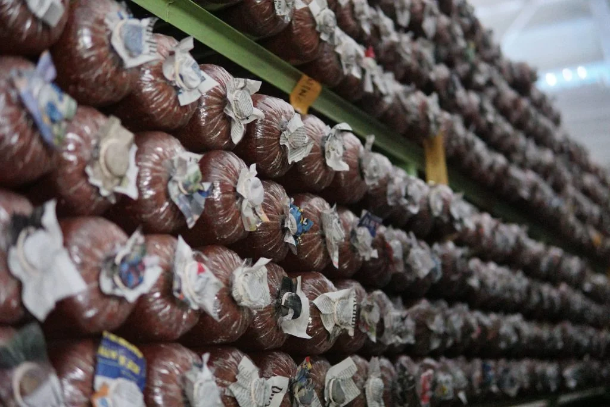

Integritas • Kesegaran • Kemitraan Lokal

Didirikan dengan visi untuk memajukan komoditas pangan lokal, Jamur Indonesia adalah produsen dan distributor utama berbagai jenis jamur pangan berkualitas premium yang berbasis di Indonesia. Kami menjembatani para petani jamur lokal berbakat langsung ke pasar modern, UMKM kuliner, serta restoran berskala nasional.
Setiap jamur yang kami distribusikan melewati proses seleksi parameter kualitas ketat (meliputi tingkat kelembapan ideal, kerapatan serat, serta ukuran optimal). Hal ini kami lakukan demi memastikan kustomer mendapatkan produk yang tidak hanya segar, melainkan juga kaya akan cita rasa alami dan nutrisi esensial harian.
Kami percaya bahwa kelangsungan bisnis yang berkelanjutan bertumpu pada keadilan rantai pasok. Itulah mengapa kami mengedepankan model kemitraan yang transparan bersama para petani lokal, guna mendukung pertumbuhan ekonomi agribisnis Indonesia yang inklusif dan berkelanjutan.
Dibudidayakan secara alami tanpa bahan kimia berbahaya, menghasilkan jamur yang higienis, aman konsumsi, dan bernutrisi tinggi.
Mendukung kemandirian finansial petani lokal melalui harga beli komparatif yang adil serta pelatihan budidaya intensif.
Sistem logistik cerdas yang dirancang khusus untuk memastikan jamur sampai di tangan Anda dalam waktu sesingkat mungkin setelah panen.
Jl. Mas Mansyur No. 121, Tanah Abang, Jakarta Pusat, DKI Jakarta 10240
+62 812-3456-7890
info@jamurindonesia.co.id
Senin - Sabtu: 07.00 - 17.00 WIB
Gudang Utama Jakarta